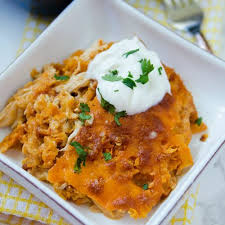

Doritos Casserole

Description:
Got this recipe for a Doritos casserole from a friend way back in junior high. It's super-simple and tastes delicious. My kids ask for it all the time. If you love enchiladas, you'll love this recipe.
You can use any flavor Doritos to suit your taste. When reheating leftover casserole, stir in a little bit of milk to make it creamy again.
Ingredients:
- 1 pound ground beef
- 1 (10.75 ounce) can cream of chicken soup
- 1 (10 ounce) can enchilada sauce
- 10 fluid ounces milk
- 1 (13.5 ounce) package seasoned tortilla chips (such as Doritos®)
- 8 slices processed cheese food (such as Velveeta®)
Steps:
- Preheat the oven to 350 degrees F (175 degrees C).
- Cook and stir ground beef in a large pot over medium-high heat until beef is crumbly and completely browned, 7 to 10 minutes. Drain and discard excess grease.
- Stir cream of chicken soup, enchilada sauce, and milk into ground beef; bring to a simmer and cook 5 minutes.
- Spread crushed chips in a 9x13-inch baking dish. Pour ground beef mixture over crushed chips; stir. Arrange cheese slices over the mixture.
- Bake in the preheated oven until cheese melts, about 5 minutes; stir melted cheese into beef mixture.